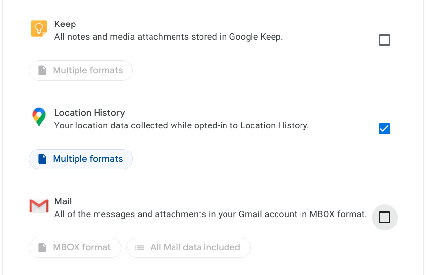

Google Location History Inspector / Intersector

This tool helps you inspect your Google location history so that you can get a sense of where you've been over the years. Two people can use it together to reveal the times and location when they were nearby.
Warning: Your location history is very sensitive data and it will show up on this screen when you follow the instructions below. This tool processes your search history entirely on your computer and does not send your data to this or any other web site or service. (You can go offline or disconnect your Internet connection after step 1 below if you're skeptical of that!)
Ready? Here's what to do:
- Go to Google Takeout to download an archive of your search data for your primary Google account. If you have more than one Google account that you frequently use, do this for each of the accounts.
- Under "Select data to include", choose only the "My Activity" option and turn everything else off. (It won't hurt to include other data, but it will take much longer to export and download). If "My Activity" is not available, you might have Google's search history turned off, or you might be using a Google G-Suite domain whose administrator has restricted data export.
- (Optional) To limit the activity to only location history, you can uncheck everything apart from "Location history". This will reduce the size of the Takeout download.
- On the next step, keep all the default choices (".zip" file type) and select "Create archive". Wait for the export to finish - this can take several minutes - and then download the resulting zip file to your computer.
- Select the "Choose files" button below and select the zip file(s) you downloaded above.
- After a few moments a table with your searches will be displayed on the screen. From there you can page through your location history or explore them using the keyword filter and sorting features:
- Click on the "Location" header to sort the locations you've visited.
- Click on the "Start time" header to sort by the time you visited a location.
- Click on the "End time" header to sort by the time you left a location.
- Click on the "Visit confidence" header to sort by the confidence that you really visited the location.
- Click on the "Location confidence" header to sort by the confidence that this was the correctly detected location.
- Type something into the "Filter by keyword" box to show only locations that contain a particular keyword.
- Click the "Download to a .tsv" file button beneath the table to get a file that you can import into a spreadsheet program.
- To learn what you have in common with a friend:
- Click the "Download hashes for all locations to a file" button at the bottom of the table and choose a password to protect the data in the file. After a few moments, a file will be downloaded that you can safely send to your friend without revealing your location history.
- Your friend should do steps 1 to 3 above on their own computer and then select "Intersect with a friend's hashes". You will be prompted to type in the password you chose above and then select the hash file you've sent to your friend. At that point your friend's times and locations will be narrowed down to show only the ones that match a time and place you've visited as well. (Be aware that, although this will only reveal locations which you have in common with your friend, the results have the potential to be uncomfortable or surprising to one or both of you.)
- When you're done, close this browser tab and delete the Google Takeout zip file from your computer. If you'd like to delete items from your Google location history or change your location history settings based on what you've learned, head over to myaccount.google.com/activitycontrols/location
Here's a recent presentation about this work. Please send comments and questions about this tool to Doug Beeferman.
{kind=link}